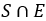
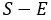
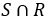
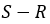
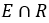
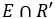
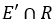
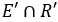
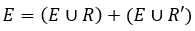

Un ingeniero cree que hay una posibilidad \(P(E)\) de que extraterrestres del planeta Kepler-452b estén tratando de comunicarse con nosotros mediante mensajes de alta frecuencia a la tierra.
El ingeniero pretende captar las señales con un equipo que garantiza la detección con una probabilidad \(P(R|E)\). Sin embargo, si los extraterrestres no están enviando señales, la probabilidad de que el equipo parezca detectar señales es de \(P(R|E')\).
Si el equipo detecta señales. ¿Cuál es la probabilidad de que en realidad las estén enviando los extraterrestres de Kepler-452b?
E = 
E' = 
R = 
R' = 
R|E = 
R'|E = 
R|E' = 
R'|E' = 
Ya que E y E' son eventos colectivamente exhaustivos y tambien son eventos mutuamente excluyentes entonces cada uno es una partición del espacio muestral S.
Además R es un subconjunto de S compuesto por 
La probabilidad de que si se detectan señales estas provengan de Kepler-452b es 0 equivalente al 0 de R
Basado en Wackerly, Mendenhall, Scheaffer. (2010). Estadística matemática con aplicaciones, septima edición. Cengage learning, México. p. 69 - 70.